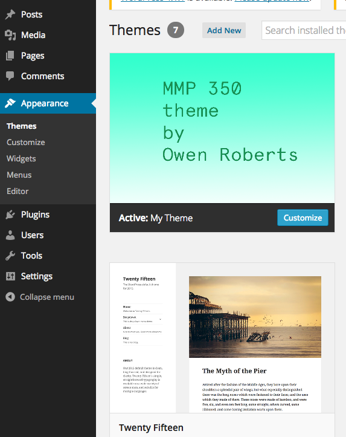

Once each portfolio is finished, we can submit the template files as a WordPress theme to the theme directory. The requirements for submitting a WordPress theme can be found here. This is where other users can download and install themes to use on their own blogs. In order to do this the themes have to have unique branding, including a favicon and a theme image.
The theme image can be created by making an image at 880 x 600 dimensions called screenshot.png and adding it to the root directory of you theme. This should include the name of the theme, or a logo, or the developer name, or some visual representation of the theme itself like the color scheme or typography.
To create a favicon, make an image that is 16 x 16 pixels and save it as favicon.ico. Add it to your theme and use the following line in the <head> section of your header.php file:
<link rel="shortcut icon" href="<?php echo get_stylesheet_directory_uri(); ?>/favicon.ico" />For the themes to work we also need to add a few extra template pages, which will be similar to pages we already have, including archive.php, 404.php and search.php. Archive might be based off of the category.php template. Search and 404 could be based on index.php or single.php.